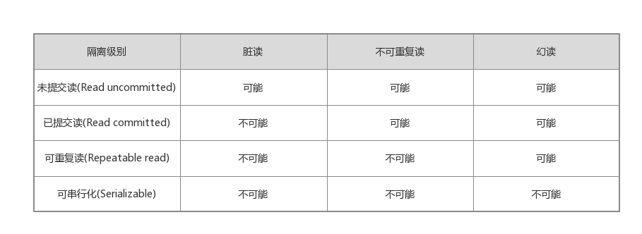
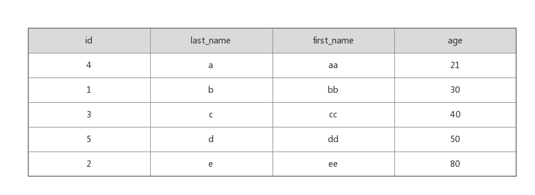

MySQL的锁问题
概述
MySQL的锁机制最显著的特点就是不同的存储引擎支持不同的锁机制。比如，MyISAM存储引擎采用的是表级锁；InnoDB存储引擎既支持行级锁，也支持表级锁，但默认情况下采用行级锁。
上述的2种锁的特性如下：
- 表级锁：开销小，加锁快；不会出现死锁，锁定粒度大，发生锁冲突的概率最高，并发度最低。
- 行级锁：开销大，加锁慢；会出现死锁，锁定粒度小，发生锁冲突的概率最低，并发度最高。
MyISAM表锁
MySQL的表级锁有2种：表共享锁(Table Read Lock)和表独占锁(Table Write Lock)。这2种之间的兼容性：对MyISAM表的读操作，不会阻塞其他用户对同一表的读请求，但会阻塞对同一表的写操作；对MyISAM表的写操作，则会阻塞其他用户对同一表的读和写请求；
MyISAM在执行查询语句(select)之前，会自动给涉及的所有表加读锁，在执行更新操作(updata,delete,insert等)之前，会自动给涉及的表加写锁，这个过程并不需要用户干预。给MyISAM表显示加锁，一般是为了在一定程度模拟事物操作，实现对某一时间点多个表的一致性读取。
|
|
- 在用lock tables给表显式加表锁时，必须同时取得所有涉及表的锁，并且不支持表升级。也就是说，在执行lock tables后，只能访问显式加锁的这些表，不能访问未加锁的表；MyISAM总是一次获得SQL语句所需要的全部锁，所以不会出现死锁。
- 在上面read锁后加了local选项，作用就是在满足MyISAM表并发插入条件的情况下，允许其他用户在表尾并发插入记录。
MyISAM存储引擎有一个系统变量concurrent_insert，专门用以控制其并发插入的行为：
- concurrent_insert = 0，不运行并发插入
- concurrent_insert = 1，如果MyISAM表中没有空洞(即表的中间没有被删除的行)，MyISAM允许在一个进程读表的同时，另一个进程从表尾插入记录，这是默认的设置。我们可以使用 optimize table table_name 命令来进行表优化，可以将表中的空间碎片进行合并，消除由于删除或者更新造成的空间浪费。
- concurrent_insert = 2,无论是否有空洞，都运行在表尾并发插入记录
关于MyISAM的锁调度问题，MySQL认为写请求一般比读请求要重要，所以一般写进程会优先获得锁，如果有大量更新操作和查询操作，那么大量的更新操作会造成查询操作难获取读锁，从而降低查询效率。
InnoDB锁问题
InnoDB与MyISAM的最大不同有两点：一是支持事务(transaction)；二是采用了行级锁。
事务属性
事务是由一组SQL语句组成的逻辑处理单元，具有以下属性(ACID属性)：
- 原子性(Atomicity):事务是一个原子操作单元，其对数据的修改，要么全部执行，要么全部都不执行。
- 一致性(Consistent)：在事务开始和完成时，数据都必须保持一致性状态。
- 隔离性(Isolation)：事务可以在不受外部并发操作影响的“独立”环境执行，也就是说事务处理过程中的中间状态对外部是不可见的。
- 持久性(Durable)：事务完成之后，对于数据的修改是永久性的。
事物隔离级别
- 脏读：一个事务正在对一条记录做修改，在修改未提交之前，这些数据就处于不一致的状态，如果这时其他事务也来读取这些记录，就产生了脏读。
- 不可重复读：一个事务在读取某些数据后的某个时间，再次读取以前读过的数据，发现读出的数据已经发生了改变或者某些记录已经被删除了。所以不可重复读重点在于update和delete操作。
- 幻读：一个事务按相同的查询条件重新读取以前检索过的数据，发现其他事务插入了满足其查询条件的新数据。所以幻读的重点在于insert操作。
“脏读”，“不可重复读”和“幻读”都是数据库读一致性的问题，可以由数据库提供的一定的事务隔离机制来解决，数据库实现事务隔离的方式，有以下两种：
- 在读取数据前，对其加锁，阻止其他事务对数据修改
- 不加任何锁，通过一定机制生成一个数据请求时间点的一致性数据快照，并用这个快照来提供一定级别的一致性读取。从用户的角度来看，好像是数据库可以提供一个数据的多个版本，称为数据多版本并发控制(MultiVersion Concurrency Control,简称MVCC)。
在不同的隔离级别下，InnoDB处理SQL时采用的一致性读策略和需要的锁是不同的。

InnoDB的锁
在介绍InnoDB的锁之前，我们先学习并发控制的机制，分为两种：悲观锁和乐观锁。
悲观锁与乐观锁
- 悲观锁:它会在获取资源前对资源进行加锁，确保同一时刻只有有限的线程能够访问该资源，其他想要尝试获取资源的操作都会进入等待状态，直到该线程完成了对资源的操作并且释放了锁后，其他线程才能重新操作资源。
- 乐观锁：它其实并不是一种真正的锁，是一种思想。它会先尝试对资源进行修改，在写回时判断资源是否进行了改变，如果没有发生改变就会写回，否则就会进行重试，在整个的执行过程中其实都没有对数据库进行加锁。比如Java的并发包底层实现用到的CAS操作，就是乐观锁的例子。
关于悲观锁和乐观锁的优劣在于，乐观锁不会存在死锁的问题，但是由于更新后验证，所以当冲突频率和重试成本较高时更推荐使用悲观锁，而需要非常高的响应速度并且并发量非常大的时候使用乐观锁就能较好的解决问题，在这时使用悲观锁就可能出现严重的性能问题。
InnoDB的行锁模式
InnoDB存储引擎中使用的就是悲观锁，而按照锁的粒度划分，也可以分成行锁和表锁。
InnoDB实现以下两种行锁：
- 共享锁：允许一个事务去读一行，阻止其他事务获取相同数据集的排他锁
- 排他锁：允许获取排他锁的事务更新数据，阻止其他事务取得相同数据集的共享锁和排他锁
事务可以通过以下语句给记录集加共享锁或排他锁：
- 共享锁：select * from table_name where … lock in share mode
- 排他锁：select * from table_name where … for update
为了支持多粒度锁定，InnoDB存储引擎引入了意向锁，意向锁就是一种表级锁。而且意向锁是InnoDB自动加的，不需用户干预。
- 意向共享锁：事务想要在获得表中某些记录的共享锁，需要在表上先加意向共享锁；
- 意向互斥锁：事务想要在获得表中某些记录的互斥锁，需要在表上先加意向互斥锁；
关于意向锁的作用，可以举一个例子：如果没有意向锁，当已经有人使用行锁对表中的某一行进行修改时，如果另外一个请求要对全表进行修改，那么就需要对所有的行是否被锁定进行扫描，在这种情况下，效率是非常低的；不过，在引入意向锁之后，当有人使用行锁对表中的某一行进行修改之前，会先为表添加意向互斥锁，再为行记录添加互斥锁，在这时如果有人尝试对全表进行修改就不需要判断表中的每一行数据是否被加锁了，只需要通过等待意向互斥锁被释放就可以了。
InnoDB行锁实现方式
InnoDB行锁是通过给索引上的索引项加锁来实现的，如果没有索引，InnoDB将通过隐藏的聚簇索引来对记录加锁。InnoDB行锁分为3种情形。
- Record lock：对索引项加锁
- Gap lock：对索引之间的“间隙”加锁
- Next-key lock：对记录以及记录的两侧的间隙加锁
InnoDB这种行锁实现特点意味着：如果不通过索引条件检索数据，那么InnoDB将对表中的所有记录加锁，实际效果和表锁一样。
下面介绍Next-key锁：当我们用范围条件而不是相等条件检索数据，并请求共享或排他锁时，InnoDB会给符合条件的已有数据记录的索引项加锁；对于键值在条件范围内但并不存在的记录，叫做“间隙”，同样InnoDB也会给这个“间隙”加锁。
举个例子：

当我们更新一条记录，比如”SELECT * FROM users WHERE age = 30 FOR UPDATE;” ，InnoDB 不仅会在范围 (21, 30] 上加 Next-Key 锁，还会在这条记录后面的范围 (30, 40] 加间隙锁，所以插入 (21, 40] 范围内的记录都会被锁定。
虽然间隙锁中也分为共享锁和互斥锁，不过它们之间并不是互斥的，也就是不同的事务可以同时持有一段相同范围的共享锁和互斥锁，它唯一阻止的就是其他事务向这个范围中添加新的记录。并且间隙锁是存储引擎对于性能和并发做出的权衡，并且只用于某些事务隔离级别，防止幻读。
MVCC在MySQl中的实现
MVCC属于乐观锁的思想，它的实现没有固定的规范，每个数据库都会有不同的实现方式。在InnoDB中，会在每行数据后添加两个额外的隐藏的值来实现MVCC，这两个值一个记录这行数据何时被创建，另外一个记录这行数据何时过期。 在实际操作中，存储的并不是时间，而是事务的版本号，每开启一个新事务，事务的版本号就会递增。通过MVCC，虽然每行记录都需要额外的存储空间，更多的行检查工作以及一些额外的维护工作，但可以减少锁的使用，大多数读操作都不用加锁，读数据操作很简单，性能很好，并且也能保证只会读取到符合标准的行，也只锁住必要行。
在RR级别中，通过MVCC机制，虽然让数据变得可重复读，但我们读到的数据可能是历史数据，是不及时的数据，不是数据库当前的数据。这在一些对于数据的时效特别敏感的业务中，就很可能出问题。对于这种读取历史数据的方式，我们叫它快照读，而读取数据库当前版本数据的方式，叫当前读。
快照读：
- selece * from table_name …
当前读：特殊的读操作，插入/更新/删除操作，属于当前读，处理的都是当前的数据，需要加锁
- select * from table_name where…lock in share mode;
- select * from table_name where…for update;
- insert into table_name …
- update table_name set …
- delete from table_name …
事务的隔离级别实际上都是定义了当前读的级别，MySQL为了减少锁处理的时间，提升并发能力，引入了快照读的概念，使得select不用加锁。
在RR级别也消除了一部分的幻读问题，行锁防止别的事务修改或删除，GAP锁防止别的事务新增，行锁和GAP锁结合形成的的Next-Key锁共同解决了RR级别在写数据时的幻读问题。
但是在Serializable级别来消除幻读就很简单，读加共享锁，写加排他锁，读写互斥。使用的悲观锁的理论，实现简单，数据更加安全，但是并发能力非常差。如果你的业务并发的特别少或者没有并发，同时又要求数据及时可靠的话，可以使用这种模式。所以在Serializable这个级别，会给select操作加锁。
复制和恢复对锁机制的影响
MySQL的恢复和复制和InnoDB锁机制和一致性读策略也有较大影响。例如，对于 “insert into target_tab select from source_tab where …”和”create table new_tab … select … from source_tab where …”这种SQL语句，MySQL没有使用对并发影响最小的多版本数据来实现一致性读，而是给source_tab加锁，阻止对source_tab的更新，就是为了保证恢复和复制的正确性。
当然，我们如果使用基于行的binlog日志来恢复和复制就不会存在上述问题，或者使用”select from source_tab … into outfile…” 和 “ load data infile …”语句组来实现上述功能，不会对source_tab加锁。
死锁
MyISAM表锁是deadlock free的，因为MyISAM总是一次获取所需的全部锁，要么全部满足，要么等待，因此不会出现死锁。但是在InnoDB中，除了单个SQL组成的事务外，锁是逐步获取的，并且InnoDB中实现的锁是悲观的，那么不同事务之间就可能会互相等待对方释放锁造成死锁。
如果出现死锁，可以用show innodb status \G命令来确定最后一个死锁产生的原因。
在了解锁机制后，我们可以调整SQL来减少锁冲突，包括以下几项：
- 在符合业务要求的情况下，尽量使用低的事务隔离级别
- 尽量使用索引来访问数据，加锁更加精确
- 给记录集加锁时，一次性请求足够级别的锁。
- 不同的程序访问一组表时，尽量约定用相同的顺序访问各表；对单个表而言，尽量用以固定的顺序存钱表中的行
- 尽量使用相等条件访问数据，避免Next-key锁对并发插入的影响
- 对于特定的事务，可以使用表锁来避免死锁